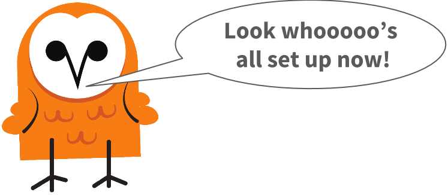
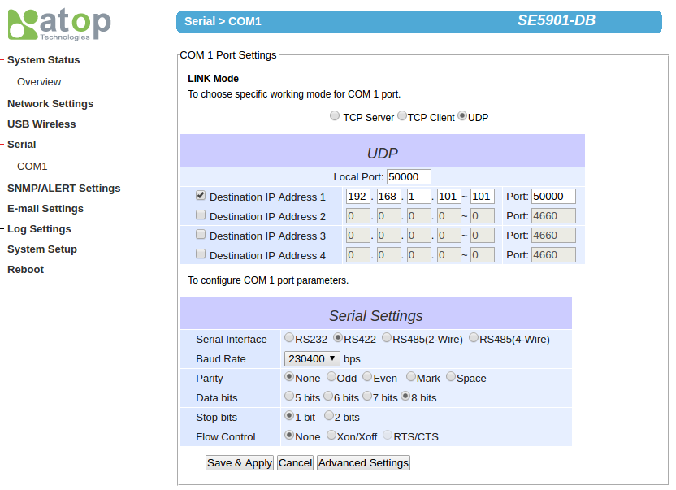
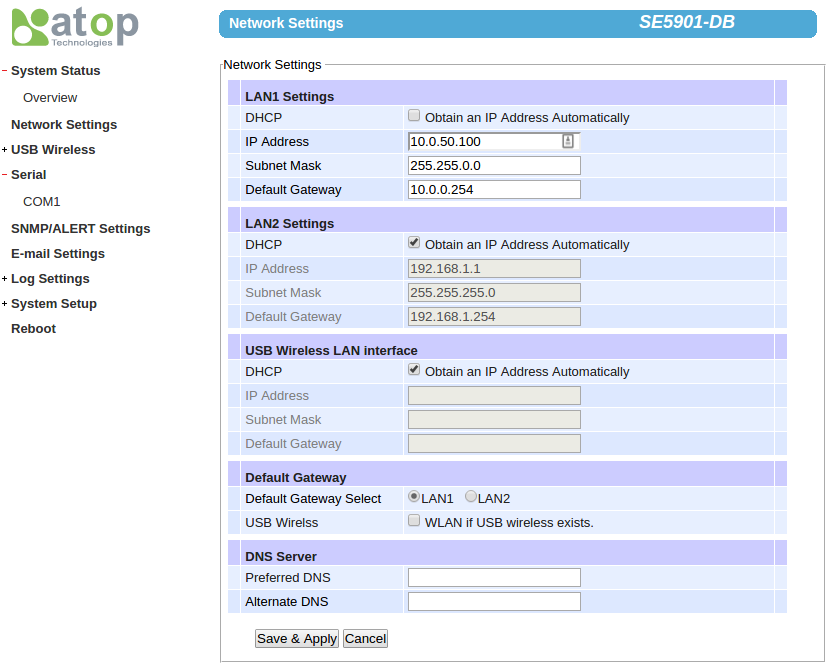

Install a Starter Kit
Here we'll present how to install a starter kit. At the end of this tutorial you'll have a stream of sensor data arriving at your PC/server ready to be processed by any of our open source software.
Select your starter kit and follow the instructions below:
You should have in front of you the following kit:

Install Node.js
If you don't already have Node.js installed, be sure to do so first! Installation is easy on all platforms. We recommend you select the LTS version.
Install the Hardware
Take care to stick it in the right hole! Seriously, read on...
Connect the Reelceiver
Plug the reelceiver into the hub so that the Hub → arrow points towards the hub. Note that the reelceiver will still power on if it's connected in the wrong orientation, but it will not communicate with the hub.
Connect the Hub to your PC/server
Plug the other end of the hub into a free USB port on your PC or server. The reelceiver should power on as indicated by its blinking LED.
Install the Software
This tutorial assumes you have basic familiarity working from the console.
Download server-usb.js
Create a new directory called reelyActive. Download server-usb.js to that directory.
Alternatively, create the server-usb.js file and paste in the following code:
var server = require('hlc-server'); // Import the package
var app = new server(); // Fire up the server
app.bind( { protocol: 'serial', path: 'auto' } ); // Listen on USB
console.log('Browse to http://localhost:3001'); // Friendly reminder
Install Software Packages
The above code depends on our hlc-server package, as well as the serialport package in order to listen over USB. From the console, browse to the reelyActive directory you created. Then run the following two commands:
npm install hlc-server
npm install serialport
If you experience any problems with the latter, consult the serialport package documentation for specific instructions.
Run the Software
From the console, again from the reelyActive directory you created, run the following command:
node server-usb
Point your browser to http://localhost:3001 and you should be rewarded with a screen like this:

Explore the Bubblescape and Sensorscape
Click on the bubblescape button for a visualisation of all devices detected by the reelceiver.
Click on the sensorscape button for a visualisation of the real-time sensor data from compatible devices (ex: Estimote Nearables) detected by the reelceiver.
Query the APIs
Enter the 16-digit identifier of the reelceiver into the query box and then select from the pull-downs:
- Context at | receiver id
- What at | receiver id
to discover what devices are detected by your reelceiver, in contextual and RTLS representations, respectively.
You should have in front of you the following kit:

Installing Node.js
If you don't already have Node.js installed, be sure to do so first! Installation is easy on all platforms. We recommend you select the LTS version.
Connect Power
Take the wall adapter provided with your kit and plug it into the mains. If you don't have access to a North American outlet, you'll need an adapter. Don't worry about the voltage, we've provided you with a kick-ass adapter with global compatibility and enough power to drive reely long reels with plenty of reelceivers.
Plug the barrel connector of the wall adapter into the receptacle on the hub's cable harness. You should hear a beeping sound. That's good!
Connect the Reel
Now we can connect the reelceivers in a daisy-chain configuration we call a reel. This is pure plug-n-play simplicity, just take into account the following:
- The reelceivers are directional. Plug the reelceiver into the cable harness of the hub so that the Hub → arrow points towards the hub. Note that the reelceiver will still power on if it's connected in the wrong orientation, but it will not communicate with the hub.
- The order in which reelceivers are connected is not important: you can even mix reelceiver types - just respect the directionality!
- Reelceivers don't communicate via Ethernet, even if they use the same Cat5 cables as Ethernet. Be sure to plug them into the hub's cable harness, not LAN1 or LAN2!

Daisy chain all of your reelceivers to the hub (you'll need to supply the additional cables, any network cable will do). Each reelceiver's LED should blink if it is receiving power. Good job!
Connect the Hub to your Ethernet switch
Connect one end of a network cable (not provided) to LAN2 on the hub, and the other end to a free port on your Ethernet switch. If the switch is DHCP-enabled, the hub will automatically obtain an IP address and be connected to your network.
That was easy! Next up: the joys of IP settings...
Direct the packets to your PC/server
We'll now make two critical assumptions:
- Your PC/server is on the same network as the hub and you know how to determine its IP address
- You know how to determine the IP address assigned to the hub by your switch
If that's not the case, please read this. Otherwise, open a browser window and log on to the hub by entering its IP address. The default login credentials are:
- Username: admin
- Password: (blank)
Select Serial - COM1 from the menu at left. Then specify the IP address of your PC/server as Destination IP Address 1. In the example below we selected 192.168.1.101.
Click Save & Apply. In a moment, packets will be routed to your PC/server via UDP.
Run barnowl
Here we'll run barnowl, our open source middleware package which listens for the data stream, processes it and outputs the result.
Create a new directory called hello-barnowl, then from that directory run:
npm install barnowl
In the same directory, create a file called hello-barnowl.js and paste in the following code:
var barnowl = require('barnowl');
var middleware = new barnowl();
middleware.bind({ protocol: 'udp',
path: '192.168.1.101:50000' }); // Server IP address here!!!
middleware.on('visibilityEvent', function(tiraid) {
console.log(tiraid);
});
Now simply run:
node hello-barnowl.js
and you should see data being output to the console. These are radio transmissions being captured by the reelceivers. It works!
Alternative: direct-connect to hub
It is possible to directly connect your PC to the hub and receive the data stream. In this section we'll explain how.
Connect one end of a network cable (not provided) to LAN1 on the hub, and the other end to your PC. Now you'll need to change the IP address of your PC to 10.0.50.101. If you don't know how to do this, search the Internet for "How to change my IP address in OS" where OS is the name of your operating system.
Open a browser window and log on to the hub by entering its IP address: 10.0.50.100. The default login credentials are:
- Username: admin
- Password: (blank)
Select Serial - COM1 from the menu at left. Then specify the IP address of your PC as Destination IP Address 1: 10.0.50.101.
Click Save & Apply.
Select Network Settings from the menu at left. Then ensure that LAN1 is selected as Default Gateway.
Click Save & Apply. In a moment, packets will be routed to your PC via UDP. Now you can run barnowl taking care to specify 10.0.50.101:50000 as your path.
What's next?
With the hardware in place, you're ready to start exploring the capabilities of the reelyActive platform. Read our Barnowl Baby Steps tutorial to build on what you've already done. Or try making your own Smart Space. Enjoy!